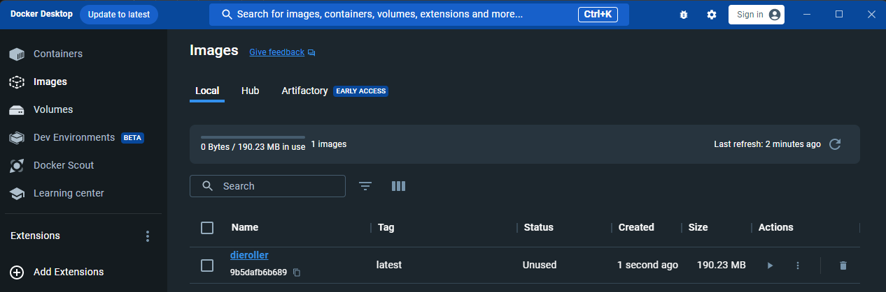
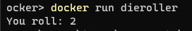

This blog post builds on the first in the series (here) where a .NET console app was ran via Docker. In this post we will do both the building and running of the app with Docker.
As before, all the code required for this example can be found at github here. And, as before, we will be using a simple console app that simulates a die roll as the subject application.
The Dockerfile for this example is slightly different to the one used before so that we can use Docker to do both the building and running of our application. It now looks like:
FROM mcr.microsoft.com/dotnet/sdk:7.0 AS build-env
WORKDIR /app
COPY src/. ./
RUN dotnet restore
RUN dotnet publish -c Release -o out
FROM mcr.microsoft.com/dotnet/runtime:7.0
WORKDIR /app
COPY --from=build-env /app/out .
ENTRYPOINT ["dotnet", "DieRoller.dll"]
The lines in our Dockerfile are grouped into two parts: the first part does the building of the app, the second part does the running. Note that both parts are similar in structure: FROM ..., WORKDIR ..., COPY ..., some other command. In fact, we are now using what is refered to as a multi-stage build. By using multi-stage building in a Dockerfile, we can use the output from one stage in subsequent stages. So we can use the output of the build stage in the run stage.
The first block/stage in the Dockerfile:
FROM mcr.microsoft.com/dotnet/sdk:7.0 AS build-env
WORKDIR /app
COPY src/. ./
RUN dotnet restore
RUN dotnet publish -c Release -o out
Is being used to build the console app.
FROM mcr.microsoft.com/dotnet/sdk:7.0 AS build-env details what base image to use for the image we are building. In this case, the Microsoft image for the .NET 7 SDK. But now we also have the AS build-env at the end. This is naming the current stage as build-env for us to refer to it later on with that name.
The next two commands WORKDIR /app and COPY src/. ./ are setting the current directory of the Docker image we are building to app and copying everything from src/ in our current local directory to this folder in the Docker image.
The final two commands build the console app within the Docker image. RUN dotnet restore restores any dependencies the project has (e.g. nuget packages) and RUN dotnet publish -c Release -o out builds and outputs (publishes) a release version of the app into a folder called out.
The second block/stage in the Dockerfile:
FROM mcr.microsoft.com/dotnet/runtime:7.0
WORKDIR /app
COPY --from=build-env /app/out .
ENTRYPOINT ["dotnet", "DieRoller.dll"]
Is responsible for running the console app and is identical to the lines used in the previous blog post, when we were just running the console app, expect for the third line doing the copying: COPY --from=build-env /app/out .. Now, because we are using a multi-stage build Dockerfile we are copying the output from our previous stage which is named build-env whose output went to a folder called app/out.
Once we've copied the output of the build stage into this image we'll use for running the ENTRYPOINT is set like before.
To now use this Dockerfile to build an image and run the container from it we need to follow the steps:
These are very much the same as before.
So to build the Docker image:
docker build -t dieroller .
Which if we check Docker Desktop shows that we now have a built image:
And to run this image in a container:
docker run dieroller
Which gives us the output like the following (of the console app running):
So we now have a Dockerfile that can be used to both build and run a .Net-based console app.
See the next part of this blog series here for a bonus post discussing Docker multi-stage builds in more detail.